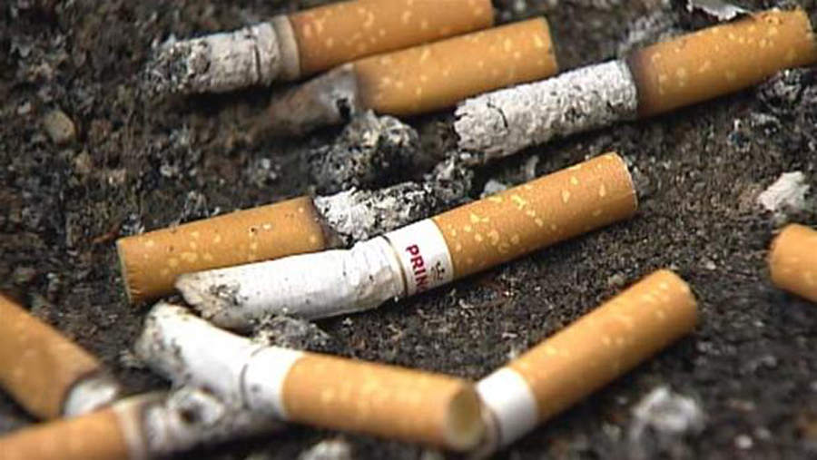
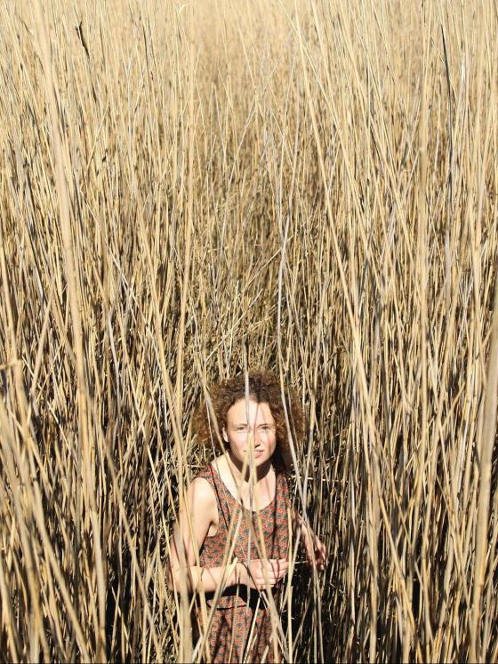
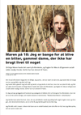

FP10 Dansk, skriftlig fremstilling
Prøvedel b
Modtagerrettet kommunikation
Formelt brev
Prøvedel c
Skriftlig fremstilling
1 Hygge på dåse
2 Sårbar
3 Gå glad i bad
Du skal skrive den valgte opgaves nummer og titel på din besvarelse.
Modtagerrettet kommunikation
Formelt brev
Prøvedel c
Skriftlig fremstilling
1 Hygge på dåse
2 Sårbar
3 Gå glad i bad
Du skal skrive den valgte opgaves nummer og titel på din besvarelse.
Før du skriver
Til eleven
Til denne prøve i skriftlig dansk har du adgang til internettet.
Du må ikke kommunikere eller dele dine dokumenter med andre under prøven.
Nogle af opgaverne kræver, at du skal søge informationer på internettet til brug for din besvarelse. I andre opgaver er det en åben mulighed at søge fakta og inspiration.
Layoutet af din besvarelse indgår i vurderingen. Tænk derfor på, at du udover tekst kan inddrage fx billeder og andre grafiske virkemidler.
Hvis du i din besvarelse anvender informationer, citater, billeder eller andre grafiske virkemidler, hentet fra internettet, skal du til sidst i besvarelsen angive de væsentlige kilder.
Din besvarelse vurderes på både indhold, sprog og form. Se vurderingskriterierne nedenfor.
God arbejdslyst!
Vurderingskriterier til eleven
Din skriftlige besvarelse bliver vurderet ud fra en helhedsvurdering af 3 dimensioner: indhold, sprog og form.
Der gives én karakter.
Del b Modtagerrettet kommunikation
| Vurderingens 3 dimensioner | Vurderingskriterier | Forklaring |
| Tekstens indhold | Opgavens krav | I hvor høj grad opfylder din besvarelse de krav, der er stillet i opgaven? |
| Anvendelse af den modtagerrettede kommunikation | I hvor høj grad viser din besvarelse sikkerhed i at skrive til en bestemt modtager? | |
| Disponering | I hvor høj grad har du disponeret din besvarelse, så den passer til opgavekrav og modtager? | |
| Søgning og brug af internettet | Hvis der i opgaven er stillet krav om anvendelse af net, eller hvis det ellers er relevant, vurderes det, hvordan og i hvor i høj grad du kritisk har bearbejdet og anvendt dette i din besvarelse. | |
| Kildeangivelse | Hvis du har anvendt net i din besvarelse, vurderes det, i hvor høj grad de væsentligste kilder fremgår korrekt i besvarelsen. | |
| Tekstens sprog | Sprog | I hvor høj grad er sproget i din besvarelse sikkert, varieret og tilpasset en bestemt modtager – både i ordforråd og syntaks?
I hvor høj grad er stavning og tegnsætning korrekt? |
| Tekstens form | Layout | I hvor høj grad er layoutet med til at fremme kommunikationen til en bestemt modtager i din besvarelse? |
Del c Skriftlig fremstilling
| Vurderingens 3 dimensioner | Vurderingskriterier | Forklaring |
| Tekstens indhold | Opgavens krav | I hvor høj grad opfylder din besvarelse de krav, der er stillet i opgaven? |
| Anvendelse af genre | I hvor høj grad viser din besvarelse sikkerhed i at skrive i genren? | |
| Disponering | I hvor høj grad er din besvarelse hensigtsmæssigt disponeret så der er tydelig sammenhæng i din tekst mellem opgavekrav og genre? | |
| Søgning og brug af internettet | Hvis der i opgaven er stillet krav om, at du skal anvende internettet til at søge inspiration eller information, eller det i øvrigt er relevant, vurderes det, hvordan – og i hvor høj grad du kritisk har bearbejdet, anvendt og gjort til eget i din besvarelse. | |
| Kildeangivelse | Hvis der i opgaven er stillet krav om, at du skal anvende internettet, vurderes det, i hvor høj grad de væsentligste kilder fremgår korrekt i besvarelsen. | |
| Tekstens sprog | Sprog | I hvor høj grad er sproget i din besvarelse forståeligt, klart og varieret både med hensyn til ordforråd, syntaks, tegnsætning og stavning? |
| Tekstens form | Layout | I hvor høj grad fremmer dit layout kommunikationen i forhold til det medie og den genre, du skriver i? |
b Modtagerrettet kommunikation
Formelt brev

Kilde: dr.dk
I din kommune har byrådet besluttet, at eleverne fra næste skoleår ikke længere må forlade skolen i frikvartererne.
Begrundelserne er:
- at skolen har ansvaret for eleverne i skoletiden
- at eleverne ikke skal fylde sig med tomme og usunde kalorier
- at skolen ønsker at forhindre eleverne i at ryge
- at undgå, at eleverne kommer for sent til timerne.
Du melder dig til at skrive brevet på klassens vegne.
|
Skriv et brev til byrådet i din kommune, hvor du kommenterer ovenstående beslutning.
Dit brev skal være på 300-350 ord. Angiv, hvor mange ord du har skrevet. |
c Skriftlig fremstilling
Du skal vælge en af disse opgaver:
2 Sårbar 3 Gå glad i bad |
1 Hygge på dåse
Kilde: Samvirke. Fotograf: Line Falck. Art Director: Line Holtegaard
Danskerne elsker at hygge sig.
Den danske hygge har vakt interesse rundt omkring i verden. I andre lande vil man gerne vide, hvad hygge er.
| Skriv en klumme om hygge.
Du skal blandt andet:
Giv din klumme en titel. |
2 Sårbar

I artiklen reflekterer en ung pige blandt andet over det at føle sig sårbar og anderledes.
Klik på linket, og læs artiklen Maren på 18: Jeg er bange for at blive en bitter, gammel dame, der ikke har brugt livet til noget.
Klik på linket, og læs artiklen Maren på 18: Jeg er bange for at blive en bitter, gammel dame, der ikke har brugt livet til noget.
|  |
Kilde: dr.dk
|
Skriv en kortprosatekst om en situation i Marens liv.
Din kortprosatekst skal:
Din tekst skal indgå i en kortprosasamling med titlen Sårbar. |
3 Gå glad i bad
Kilde: samvirke.dk
Man møder nøgenhed mange steder – ikke mindst på de sociale medier. Men nogle børn og unge bryder sig ikke om at vise sig nøgne og undgår derfor blandt andet bad efter idræt.
|
Skriv et blogindlæg til en hjemmeside om unge og kropskultur.
Se videoklippet, og undersøg forskellige holdninger til unge, blufærdighed og nøgenhed. I dit blogindlæg skal du blandt andet:
|